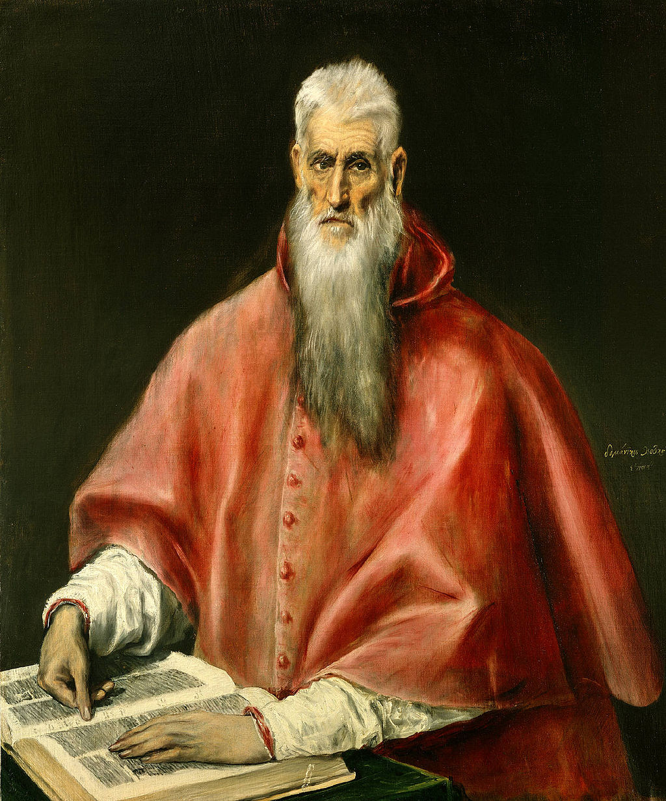

<head>
<meta charset="UTF-8" />
<meta name="keywords" content="drawing, painting" />
<meta name="description" content="drawings by Sunjy" />
<title>Sunjy</title>
<link rel="shortcut icon" type="image/x-icon" href="../../mImages/mCommon/favicon.ico" media="screen" />
<link rel="stylesheet" type="text/css" href="../../mCsses/mCommon/mCssA.css" />
<link rel="stylesheet" type="text/css" href="../../mCsses/mCommon/mCssB.css" />
<link rel="stylesheet" type="text/css" href="../../mCsses/mCommon/mCssC.css" />
<link rel="stylesheet" type="text/css" href="../../mCsses/mCommon/mCssD.css" />
<link rel="stylesheet" type="text/css" href="../../mCsses/mContent/mCssA.css" />
<link rel="stylesheet" type="text/css" href="../../mCsses/mContent/mCssB.css" />
<link rel="stylesheet" type="text/css" href="../../mCsses/mContent/mCssC.css" />
<link rel="stylesheet" type="text/css" href="../../mCsses/mContent/mCssD.css" />
</head>
<script type="text/javascript" src="../../mScripts/mContent/mContentAA.js" /></script>
<script type="text/javascript" src="../../mScripts/mContent/mContentAB.js" /></script>
<script type="text/javascript" src="../../mScripts/mContent/mContentAC.js" /></script>
<script type="text/javascript" src="../../mScripts/mContent/mContentAD.js" /></script>
<script type="text/javascript"></script> 
<script type="text/javascript">
document.write('<div class="mImgAbsolute"></div>');
/*
document.write('<p class="mFontSizeBColor" />From a white paper...</p>');
document.write('<table class="center"><tr><td>');
document.write('');
document.write('</td></tr></table>');
*/
</script>


<script type="text/javascript">
document.write('<p class="mFontSizeBColor" />Saint Jerome as Scholar</p>');
document.write('<p class="mFontSizeSColor" />This “Saint Jerome” by El Greco is one of five known paintings of Saint Jerome by El Greco. Saint Jerome is shown in the red vestments of a cardinal, although the office did not exist in his lifetime.<br><br>He is seated before an open book, symbolizing his role as translator of the Bible from Greek into Latin, in the fifth century. His version, the Vulgate, was in use throughout the Catholic Church for many centuries.<br><br>El Greco’s painting shows him with gaunt, sunken features and a long white beard, which are symbolic of his history as a penitent and his retreat to the Syrian desert.<br><br>El Greco has successfully synthesized the two aspects of Saint Jerome, the scholarly and the ascetic. During the Renaissance, paintings showed him either in his study or performing acts of penance in the wilderness.<br><br>These pictures adorned the walls of the homes of many humanists and scholars.<br><br>Jerome (347 – 420) was a priest, confessor, theologian, and historian. He was born in a village on the border of Dalmatia. He is best known for his translation of the Bible into Latin plus his commentaries on the Gospels. <br><br>He is recognized as a Saint and Doctor of the Church by the Roman Catholic Church, the Eastern Orthodox Church, the Lutheran Church, and the Anglican Communion. His written contributions to the church were extensive.<br><br>Doménikos Theotokópoulos, widely known as El Greco, Spanish for “The Greek,” was a painter, sculptor, and architect of the Spanish Renaissance.<br><br>The artist typically signed his paintings with his full birth name in Greek letters, Δομήνικος Θεοτοκόπουλος (Doménikos Theotokópoulos), often adding the word Κρής (Krēs, “Cretan”). He is best known for elongated figures and for marrying Byzantine traditions with those of Western painting.<br><br>El Greco was born in Crete, which at that time was part of the Republic of Venice and the center of Post-Byzantine art.<br><br>He trained and became a master Byzantine art before traveling to Venice to work, and then he moved to Rome, where he opened a workshop and executed a series of works.<br><br>In 1577, he moved to Toledo, Spain, where he lived and worked until his death. In Toledo, El Greco received several major commissions and produced his best-known paintings.<br><br>El Greco’s style was met with puzzlement by his 14th-century contemporaries. Still, he found greater appreciation in more modern times and is today regarded as a precursor of both Expressionism and Cubism.<br><br>His works were a source of inspiration for poets and writers, and he is considered, as an artist, so individual that he belongs to no conventional school.<br></p>');
document.write('<table class="center" /><tr><td>');
document.write('<br>He is seated before an open book, symbolizing his role as translator of the Bible from Greek into Latin, in the fifth century. His version, the Vulgate, was in use throughout the Catholic Church for many centuries.<br><br>El Greco’s painting shows him with gaunt, sunken features and a long white beard, which are symbolic of his history as a penitent and his retreat to the Syrian desert.<br><br>El Greco has successfully synthesized the two aspects of Saint Jerome, the scholarly and the ascetic. During the Renaissance, paintings showed him either in his study or performing acts of penance in the wilderness.<br><br>These pictures adorned the walls of the homes of many humanists and scholars.<br><br>Jerome (347 – 420) was a priest, confessor, theologian, and historian. He was born in a village on the border of Dalmatia. He is best known for his translation of the Bible into Latin plus his commentaries on the Gospels. <br><br>He is recognized as a Saint and Doctor of the Church by the Roman Catholic Church, the Eastern Orthodox Church, the Lutheran Church, and the Anglican Communion. His written contributions to the church were extensive.<br><br>Doménikos Theotokópoulos, widely known as El Greco, Spanish for “The Greek,” was a painter, sculptor, and architect of the Spanish Renaissance.<br><br>The artist typically signed his paintings with his full birth name in Greek letters, Δομήνικος Θεοτοκόπουλος (Doménikos Theotokópoulos), often adding the word Κρής (Krēs, “Cretan”). He is best known for elongated figures and for marrying Byzantine traditions with those of Western painting.<br><br>El Greco was born in Crete, which at that time was part of the Republic of Venice and the center of Post-Byzantine art.<br><br>He trained and became a master Byzantine art before traveling to Venice to work, and then he moved to Rome, where he opened a workshop and executed a series of works.<br><br>In 1577, he moved to Toledo, Spain, where he lived and worked until his death. In Toledo, El Greco received several major commissions and produced his best-known paintings.<br><br>El Greco’s style was met with puzzlement by his 14th-century contemporaries. Still, he found greater appreciation in more modern times and is today regarded as a precursor of both Expressionism and Cubism.<br><br>His works were a source of inspiration for poets and writers, and he is considered, as an artist, so individual that he belongs to no conventional school.<br>" />');
document.write('</td></tr></table>');
</script>


